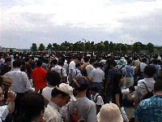
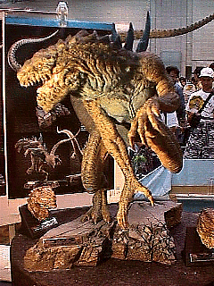
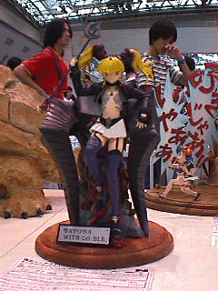
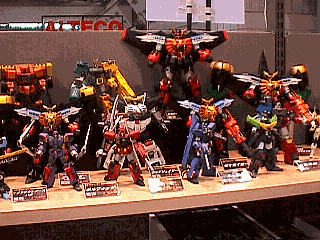
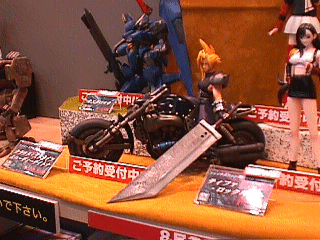
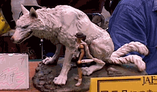
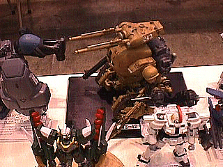

JAFCON 7 Review by: JimO
Hello Gremlins! As I write this I have just returned to my hotel from the 1998 JAFCON 7 held at the Tokyo Big Sight. Over 20,000 people attended this modeling convention put on by Hobby Japan and Bandai. After arriving we stood in line for over an hour to get in. Amazingly some modelers had actually been camping out since the day before to get in. The temperature here was over 90 degrees with a humidity approaching 90 percent. Some people actually fainted from heat exhaustion. Once inside, Peter Cech and I went and entered our kits in the contest. The entry process was very efficiently handled. Each kit is photographed for the Hobby Japan JAFCON After-Report (due in the October 1998 issue) and placed on the display tables. The level of building here is incredible! I have a few of the pictures at the end of this report. I will be putting more up once I return. Since Bandai/Hobby Japan puts on this show, the emphasis is on Gundam models. All other models fall into the non-genre class. As such you can see aircraft, cars and other models mixed with anime and character models. It really is quite a sight. JAFCON brings a form of model called the "event only" kit. Uniquely for Japan a license is granted for small and large shops to produce kits on a limited basis (100's of kits is a large run) and sell them only at one of the large events such as JAFCON or WONDERFEST. These kits are highly sought after and often recast. They sell out almost immediately. This brings up another uniquely Japanese phenomenon - team buying. Since a program is published ahead of time it is possible to know where these kits are located in the hall. Groups of modelers will get together and split the tables up. Once the doors open they hurriedly buy these kits in numbers of 3 or more. It is not uncommon for a modeler/buyer here to bring over 250,000JPY (@ $2,000USD) - just for event only kits. That being said, by the time we reached the tables most of the major event kits were gone (you learn the Kanji for "sold out" very quickly.) But if you are not looking for major characters (such as Rei from Evangelion) you can still do rather well. I managed to scoff up 4 event only kits including one that was offered at last years JAFCON as an event only. Most of the major manufacturers are here. The exception being Kaiyodo as they are responsible for the WONDERFEST being held August 9, 1998 at the same location. Interestingly, many of the tables were showing the WONDERFEST event only kits. Most also were offering discounts of 30% or more on stock kits. I got a Rayearth kit I have looking for at 30% off the list price from Musasiya. Another interesting item is a number of kits that are shown but not for sale. The manufacturers to gauge public opinion about future possible production use JAFCON and WONDERFEST. At approximately 14:00 the dealers had started discounting kits. We grabbed some real bargains. One dealer actually was doing a 2 for 1 sale. By 15:00 we had spent just about all our money and had to go get our kits from the contest (sad to report that we did not win ::smile:

You have not seen customer service until you visit Japan. You can actually have your purchases from the convention shipped to your home, office or hotel. Unfortunately we found out where this service was located to late in the day and were unable to take advantage of it.
My thanks to Peter Cech for all his help.
Here are some of the pictures from JAFCON. I will be adding on to this page once I return to the states.
|
 American Godzilla - 27,000JPY |
 Peter Cech contest entry |
|
Contest Entry - approximately 18 inches high |
JimO Contest Entry |
|
Dealer Table |
 Dealer Table |
|
 FFVII - cast resin - 1/8 scale |
Contest Entry - Liquer from Silent Mobius |
|
 Event Only |
Godzilla - 55,000JPY |
|
 Contest Entry - MS-12 |
Contest Entry - All wood and totally transformable |
|
Contest Entry - Gally |
|
The Gremlins in the Garage webzine is a production of Firefly Design. If you have any questions or comments please get in touch.
Copyright © 1994-1998 Firefly Design.